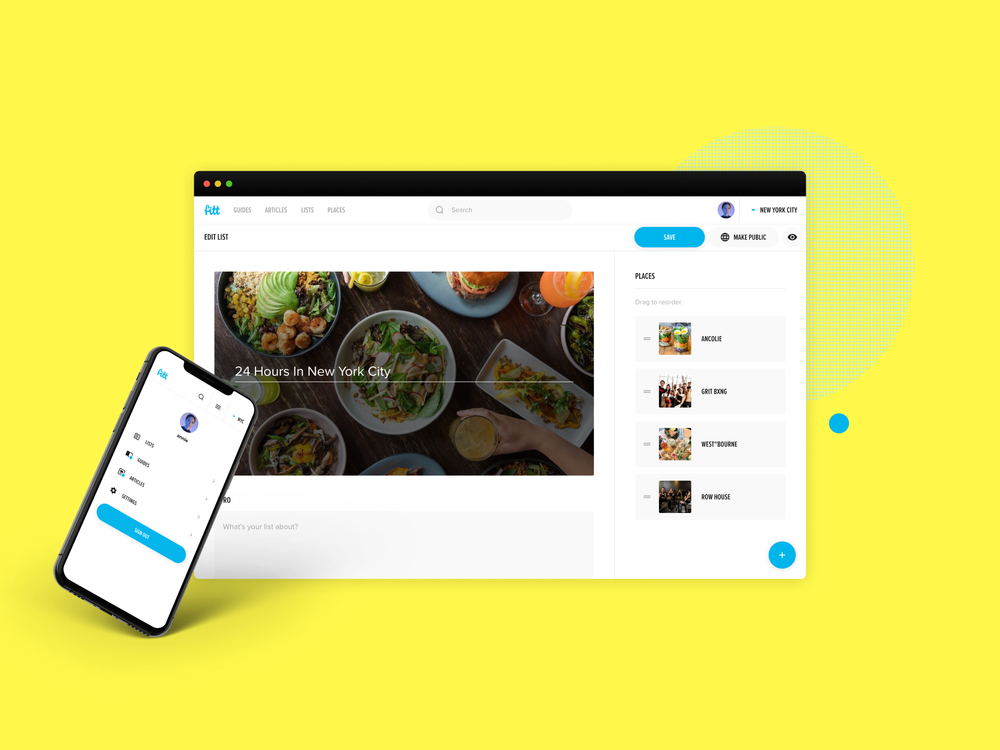
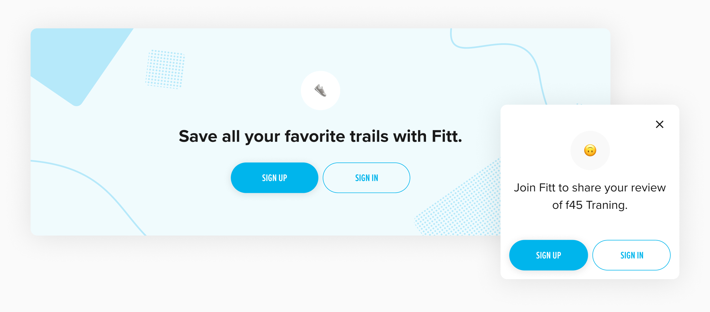
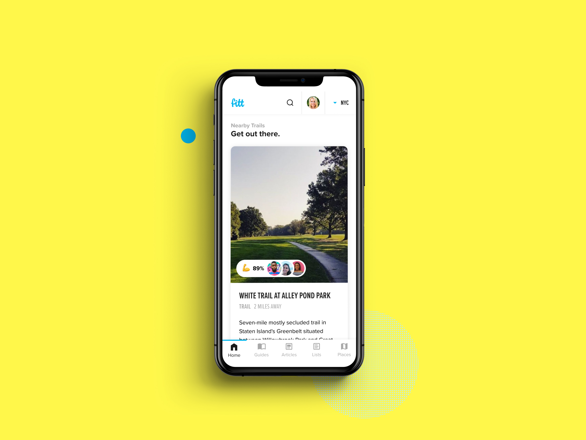

In 2018, Fitt was a read-only media site built on Wordpress. The site’s main draw was list-style articles that covered the best local restaurants, gyms, outdoor activities, and fitness events. The content spanned multiple cities and had consistent traffic by way of Google Search.
The founders, Joe and Anthony, secured funding to go from media outlet to full digital product. The challenge was to transform Fitt into an all-in-one platform for living a healthy lifestyle. I joined the company to lead design along with my friend Nick who would lead engineering.
Product Strategy
From what I’ve seen, digital product companies tend to start with a niche utility and at some point decide to create content around said utility (articles, videos, Instagrams, etc.). In our case, we were trying to solve the reverse problem. We had popular content, but no utilities that warranted having actual user accounts. You could already read everything on the site—so what was the point of signing up?
The assumption was that we could find a way to use the content to drive purchases. For example, you could read about the hot new fitness studio and book a class without leaving Fitt. The idea meant convenience for the user, new sales for the businesses, and positioning Fitt as a consumer-friendly marketplace.
My inspiration for how to structure the user experience came from Apple. Around that time, Apple had redesigned their App Store with a content-first approach—articles had become the primary entry point for discovering and downloading apps. If using editorial to drive transactions was working for Apple, it could work for us.
01
Locally-sourced Content
The in-house Editorial Team worked with writers across 31 cities—documenting the best places to eat healthy, work out, run, and hike. The most popular content format was Guides: always up-to-date place collections centered around a theme. They also created one-off articles that covered everything from new business openings to interviews with fitness influencers.
Retired Formats
Stories
Yes, we went there. While the Instagram style photo and video slideshows were fashionable, they proved difficult to create on a regular basis and didn’t align with existing user behavior at the time.
News
News was bite-sized editorial snippets inspired by our weekly email newsletter. The format was interesting, but it never really clicked in the product context.


02
All the best places

Places were restaurants, gyms, trails, and run routes extracted from our content. There were over 13k places in our directory that manifested throughout the site as cards, stand-alone pages, and interactive maps.
We added low-effort user reviews to collect feedback on places. Each review started with an emoji reaction and ended with an optional “add details” flow that let us collect information about a place—like if a restaurant offered vegan options or if a gym had an intense atmosphere.


03
Integrating transactions
With Mindbody as an investor, it made sense to tackle fitness class booking as the first transactional layer on Fitt. We started integrating class schedules via the Mindbody Affiliate API.
04
Profiles & Lists

In looking for additional ways to incentivize creating a user profile, we developed Lists—a unique way for Fitt users to create collections of their favorite places.
This ended up being one of our more complicated features as we had to account for:
- Multiple entry points for adding a place to a List
- Adding items to an existing List vs. creating a new List mid-flow
- List annotation and organization
- Private vs. Public Lists


Signed In vs. Signed Out
As we continued adding more signed-in features, it was important to remember what things looked like for users that had yet to create an account. I introduced inline sign up “blocks” and reactive modals that prompted users to create a profile if they tried bookmarking content or leaving a place review. This approach allowed for users to discover product features on their own and avoided promoting sign ups with uninvited popups.

05
Connecting the pieces

Persistent Elements
City Switcher
While navigating Fitt, users had the ability to switch city context at any time. This was especially useful for traveling somewhere new.
Cross-content Search
Health and wellness topics can get pretty specific, so it was also important to keep search readily available. Search results were grouped by type—mirroring the top level navigation.


06
Behind the scenes
Custom CMS

We managed all of Fitt with a custom-built CMS. The web app held information for thousands of articles, places, media assets, and partner ads. Over time, the design evolved to support new product features and content creation needs.


Closing Time
While we were (arguably) close to achieving product-market-fit, the Fitt team had to disband in October 2020 due to COVID-19’s impact on gyms and restaurants. The founders currently maintain the Fitt brand and have since shifted to a B2B, media-focused strategy as Fitt Insider. ⊹